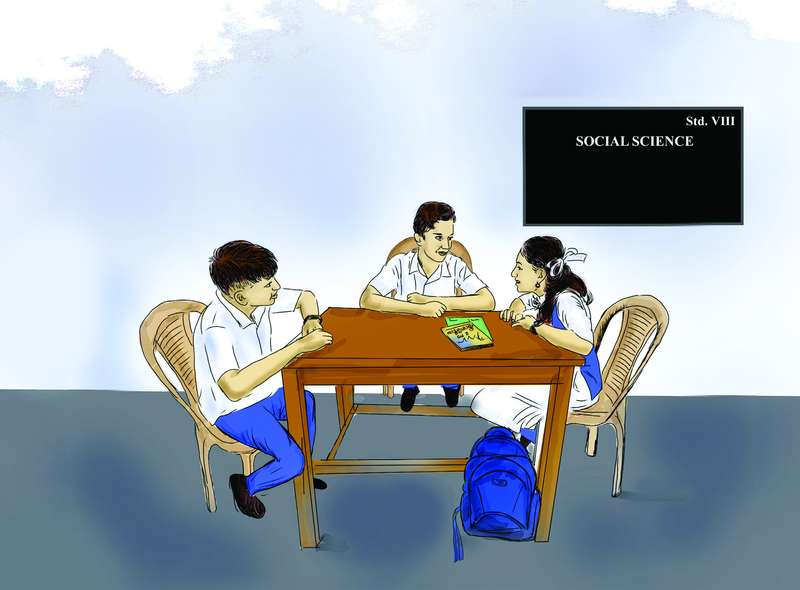
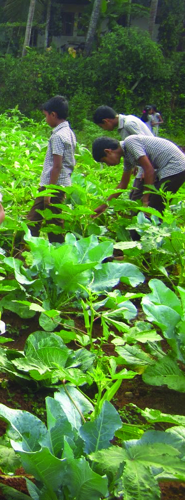
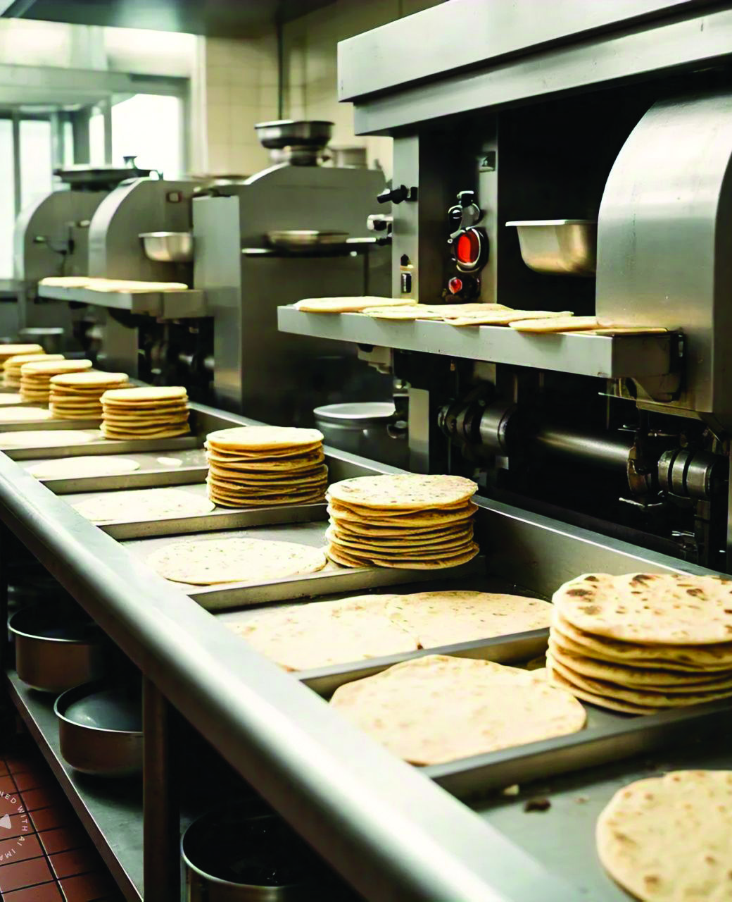
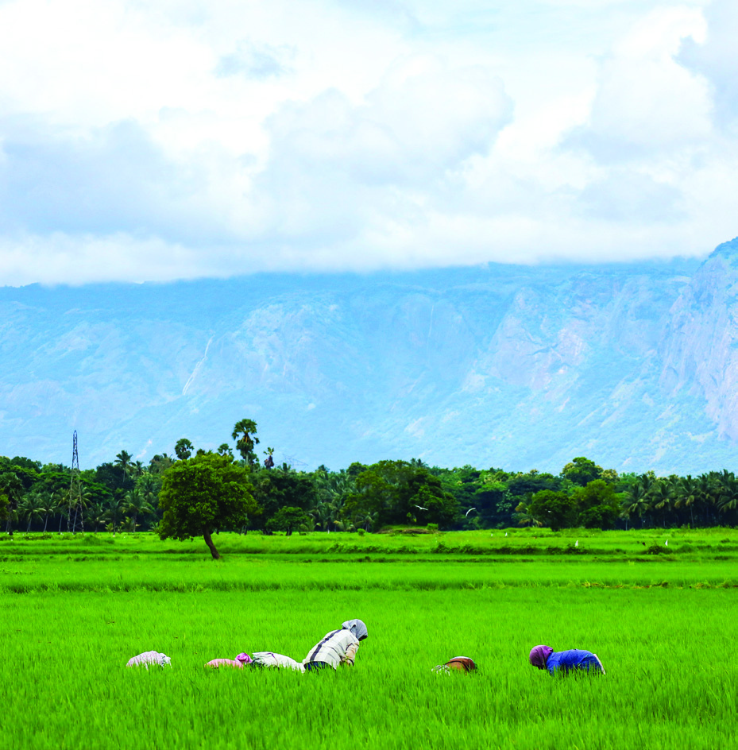
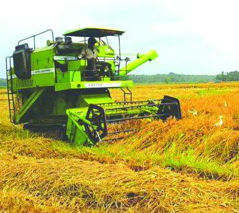
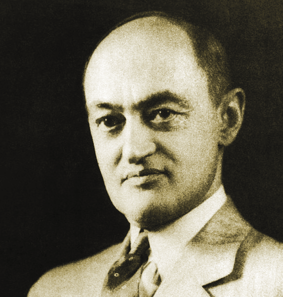

Basic Economic
Problems and the
Economy
4
Unit
Aadhi, Job and Aashna
are friends and are
discussing their needs.
I also want
everything you
said. Apart from
these, when I grow up,
I want my own house,
phone, car and more. But
are these things enough?
Don’t we need some
services too?
Right. We need
various services like
teachers to teach us
and doctors to
treat us.
I couldn’t buy
everything because I had to
buy things for the house.
Oh! Look at the needs we have from the
time we wake up in the morning till
we go to bed. Paste, brush, soap,
food, clothes, shoes,
medicines…. and so on.
Aashna,
Did you buy the
materials needed
for the project that the
teacher mentioned
yesterday?
Page 59


Page 60

60
Social Science
Standard
List the basic and gratifying needs in our life.
Don’t we all have these needs as part of our daily lives? How
are our needs met? Needs are fulfilled through proper use
of various goods and services. The essential needs for the
survival of life such as food, clothing and shelter can be
called basic needs. But are all the goods and services that we
use in our daily lives only to satisfy our basic needs? There
are certain needs that make our life more comfortable and
happy. These are called gratifying needs. Examples for this
include the use of luxury cars, expensive jewellery and costly
dresses.
We have discussed the basic needs and gratifying needs in
daily life. Do these needs have any common characteristics?
Let us check.
Characteristics of Needs
l human needs are diverse and innumerable
l some needs can be met alone and others through
collective efforts
l a need once fulfilled may be repeated
l needs vary with time, place and individuals
l with human progress, needs also change
Demands multiply along with progress. But resources may
not increase in proportion to demands. We use goods
and services with or without payment. Human needs
are numerous and need to be prioritised to be fulfilled.
Individuals prioritise fulfillment of basic needs. In this way,
the country produces many goods and services to fulfill the
various needs of man. We basically face some problems
related to the production process. What are they? Let us
see.
Page 61


61
Basic Economic Problems
and the Economy
Suppose the school decides to produce the vegetables needed for
your school’s noon-meal scheme. What are the decisions to be taken
regarding vegetable farming? List them.
Have you discussed the important points to be addressed
in relation to vegetable farming in your school? While
producing any product, many problems will have to be faced
be it a society or a country.
Basic Economic Problems
There are three basic economic problems that a country
faces in relation to the production process of goods and
services:
What to
produce?
How to
produce?
For whom to
produce?
What to Produce?
We need to prioritise what vegetables and in what quantity
to be produced for the school noon-meal scheme. Similarly,
each country has to prioritise what to produce using the
available resources. Once it is decided what to produce,
the question as how much to produce becomes relevant.
A country has to produce many goods and services. If the
country decides to produce more of any one commodity or
service, it will have to limit the resources that can be used
to produce other goods. For example, a country facing food
shortage will have to devote a greater share of its available
resources to food production. Similarly, it is necessary to
decide what industries to start and how many units if it is
decided to manufacture industrial products. The country
takes such decisions to achieve a balance between the needs
of the society and the quantity of products produced in the
country.
Fig. 4.2 l
School Vegetable Garden
Page 62



62
Social Science
Standard
What are the products that produced in your area that meet your
needs? Are they sufficient for your use?
Fig. 4.3
Fig. 4.4
Fig. 4.3 l
Fig. 4.4 l
Once it is decided what goods and services must be produced
and the quantity, the second relevant issue is to do with how
to produce them.
How to Produce?
Look at the given pictures. What difference can be seen in
the making of chapati in figures 4.3 and 4.4?
What factors of production are mostly used here?
Similarly, observe the given pictures related to agriculture
and note down what factors of production are used more.
Page 63



63
Basic Economic Problems
and the Economy
Fig. 4.5
Fig. 4.6
Fig. 4.5 l
Fig. 4.6 l
Now did you understand from the pictures that the same
product can be produced using different proportions of
labour and capital? If we observe figures 4.3 and 4.5 it can
be seen that the factor of production called labour is mostly
used. But if we look at figures 4.4 and 4.6, machines are used
more for production.
The method of production using more labour and less capital
is called ‘Labour Intensive Technique.’
The method of producton using more capital and less labour
is called ‘Capital Intensive Technique.’
How to produce is a problem related to the choice of
technologies. What technology to be used depends on the
resources available in that region. There will be a difference
in the method of production depending on the availability of
resources.
Page 64

64
Social Science
Standard
Characteristics of Labour
Intensive Technique
l production involving more labourers
l low level of capital utilisation
l a production method that requires more time
l eco-friendly production method
l limited use of technology
Characteristics of Capital
Intensive Technique
l less demand for labourers
l utilises more capital investment
l ensures productivity
l depends more on technology
l less time for production
The method of production should be decided keeping in
mind the needs of the country and the availability of factors
of production.
List the production activities in your area using labour intensive
technique and capital intensive technique
Labour intensive technique
Capital intensive technique
l
l
l
l
l
l
For Whom to Produce?
Production should be done to meet the needs of the people.
The question for whom to produce means how goods and
services produced are distributed among the people.
Page 65


65
Basic Economic Problems
and the Economy
Production activities should be planned in such a way that
available resources are utilised to benefit everyone in the
society .
Do you know that goods and services are produced through
the combined action of factors of production such as land,
labour, capital and organisation? If it is so, then the value of
the goods produced has to be distributed on the basis of the
factors of production according to their share. Product value
must be distributed as rent to land, wages to labour, interest
to capital, and profit to organisation. That means, how the
income from production distributed is also important.
Look at the situations given below. Identify and write
down with which basic economic problem each situation is
connected.
Fig. 4.7 l Distribution
Members of a Kudumbashree unit
decided to start a production unit. Many
opinions arose among the members.
What will be the basic issue they have to
decide?
At the end of the discussions, it was
decided to lease some land and cultivate
it. The right proportion of labourers
and machinery to prepare the land for
agriculture was discussed. To what basic
economic problem does this relate?
There are families which do not grow
vegetables in the area where the
Kudumbashree unit works. They also
need vegetables. The Kudumbashree unit
aims to sell the surplus to those in need.
The profit from agriculture has to be
distributed among the members. To what
basic economic problem does this relate?
l
l
l
Think and identify
land
labour
capital
organisation
rent
wages
interest
profit
Page 66
66
Social Science
Standard
Economies
Capitalist Economy
Socialist Economy
Mixed Economy
These basic economic problems that exist all over the world
are solved through different economies. What is economy?
An economy is the way a country organises the production,
distribution and consumption of various goods and services.
The function of every economy is to satisfy human needs
through the use of the available resources.
Characteristics of the Economy
l economy is man-made
l economy is subject to change
l economic activities in the economy keep changing
l production, distribution and consumption are the main
activities in the economy
Different Types of Economies
Economy can be classified into three on the basis of
ownership of factors of production.
Capitalist Economy
It is an economy in which ownership of the factors of
production is concentrated in individuals.
Features
l all persons have the right to own property
l maximum profit
l limited government intervention
Page 67
67
Basic Economic Problems
and the Economy
l individuals can store resource and use it to produce goods
and services as they want
l the consumer has complete freedom in the market
(consumer sovereignty)
l competition among industries
Active participation of government in economic development
can be seen today in many countries that follow capitalist
economy.
Socialist Economy
A socialist economy is one in which the government owns and
controls all the factors of production. A centralised planning
committee will take decisions on economic activities.
Features
l ownership of the factors of production is vested in the
government
l social welfare is the main objective
l government's control over the market
l the central planning committee utilises resources
keeping in view the availability of resources and national
objectives
l reducing inequality in income and wealth
Intervention of private enterprises is also seen in today's
socialist economy.
Mixed Economy
A mixed economy is one that combines some features of a
capitalist economy and a socialist economy.
Features
l coexistence of private and public sector
Page 68


68
Social Science
Standard
l profitability and social welfare become the main objectives
l individual freedom in economic activities
l financial planning for preparation of government
schemes
l government regulation of commodity prices in certain
sectors
l government gives priority to essential goods and
services
In a mixed economy, basic economic problems are solved
through markets and centralised planning systems. India
has adopted a mixed economy after independence.
The global economy today is transforming into a knowledge-
based economy.
Organise a panel discussion and prepare a report on ‘Characteristics
of Different Types of Economies.’
Knowledge Economy
A knowledge economy refers to an economic system in which
knowledge and skills are the conductors of growth and innovation.
In this economy, knowledge is considered as a key resource. Its
creation, dissemination and application are crucial to economic
development.
We now have discussed human needs, basic economic
problems, and different Economies. Economics is the
discipline that deals with all these economic activities. It also
includes budget, banking, market, and goods and services
that we use in our daily life.
In earlier times economics was known as the science
of wealth. Adam Smith, who is known as the Father of
Economics, was the main proponent of this. Alfred Marshall
formulated economics as the science that deals with
welfare. Lionel Robbins envisioned economics as the branch
that deals with the relationship between human wants and
limited resources.
Page 69



69
Basic Economic Problems
and the Economy
Fig. 4.8 l
Adam Smith
Fig. 4.9 l
Alfred Marshall
Fig. 4.10 l
Lionel Robbins
Fig. 4.11 l
David Ricardo
Fig. 4.12 l Karl Marx
Fig. 4.13 l
J.M. Keynes
Fig. 4.14 l J. A. Schumpeter
Let us get to know some of the ideas that inspired the
development of economics.
British economist David Ricardo came up with the theory
that trade between two countries can increase the welfare
of both countries. His ‘Theory of Rent’ regarding the lease
of land is very famous.
German economist and philosopher Karl Marx developed
the ‘Theory of Surplus Value.’ According to Marx, the basis
of production is the labour of the workers. But only a small
portion of this is given to the labourer and the majority is
kept by the capitalist.
J. M. Keynes is an economist who argued for the theory of
government intervention in the economic sector. He opined
that economic problems can be solved to some extent
through government intervention.
J. A. Schumpeter, a native of the Czech Republic, developed
the concept of ‘Creative Destruction.’ Industries and
technologies create new opportunities and growth through
innovation. But he also opined that existing industries and
technologies are disrupted or destroyed by innovation.
Page 70


70
Social Science
Standard
The rise of the smart phone industries led
to the decline of the tape recorder, video
player and film camera industries.
Trade between two countries can benefit
both countries and increase the welfare of
the people.
The basis of production is the labour of the
workers.
Government intervention is needed to solve
economic problems.
Find out which of the ideas given below are related to the ideas of
different economists.
Indian Economists have given great contribution to the
development of economics.
Chanakya in ancient India, who devised an efficient tax
system for the country’s economic development and
Dadabhai Naoroji, the orginator of ‘The Drain Theory,’ are
prominent among them.
Mahatma Gandhi, Father of our Nation, describes the
economic visions in his books Hind Swaraj and India of My
Dreams.
Gandhiji’s Economic Thoughts
l Gandhiji envisioned an economy based on self-sufficiency
and decentralisation.
l Rural industries need to be nurtured to increase
employment opportunities locally.
l Expand local markets for marketing locally produced goods.
l Economic inequality should be alleviated to ensure social
justice.
Fig. 4.15 l Mahatma Gandhi
Page 71


71
Basic Economic Problems
and the Economy
Fig. 4.16 l Amartya Kumar Sen
Fig. 4.17 l Abhijit Vinayak Banerjee
Names of some economists of India and their thoughts are given below.
Find the missing ones.
Chanakya
(Efficient tax
system)
(........................)
Self-sufficiency,
Decentralisation
(........................)
Poverty
Eradication
Dadabhai Naoroji
(........................)
Amartya
Kumar Sen
(........................)
Indian Economists
Amartya Kumar Sen is the first Indian economist to win
the Nobel Prize in Economics. He was awarded the Nobel
Prize in 1998 for his outstanding contributions to Welfare
Economics.
Amartya Kumar Sen’s thoughts on Welfare Economics
l Emphasis should be placed on education, health care and
social justice to achieve economic progress.
l Gender equality and women empowerment are essential
for the progress of the country.
l Economic development should be evaluated on the basis
of its influence on human rights and freedoms.
Indian-American economist Abhijit Vinayak Banerjee was
awarded the 2019 Nobel Prize in Economics for devising
an experimental approach to global poverty eradication.
He shared the Nobel Prize with Esther Duflo and Michael
Kremer.
Page 72

72
Social Science
Standard
By identifying the basic economic problems faced by the
countries of the world, the need for efficient utilisation of
resources is realised. We identified the major economies
of the world and discussed how basic economic problems
are solved. Our goal is to ensure the welfare of the future
generations by utilising the existing resources wisely and
efficiently.
Extended Activities
l Visit any production unit or farm in your neighbourhood and prepare necessary
questionnaires to collect information to find out how various goods are produced.
l Organise a seminar on characteristics of labour intensive technique and capital
intensive technique.
l Find out with the help of the teacher which of the following countries have
economies in which the government owns and controls most of the means of
production.
India, the USA, China, Canada, Sweden, Denmark, England, Cuba, Australia,
Pakistan, Sri Lanka.